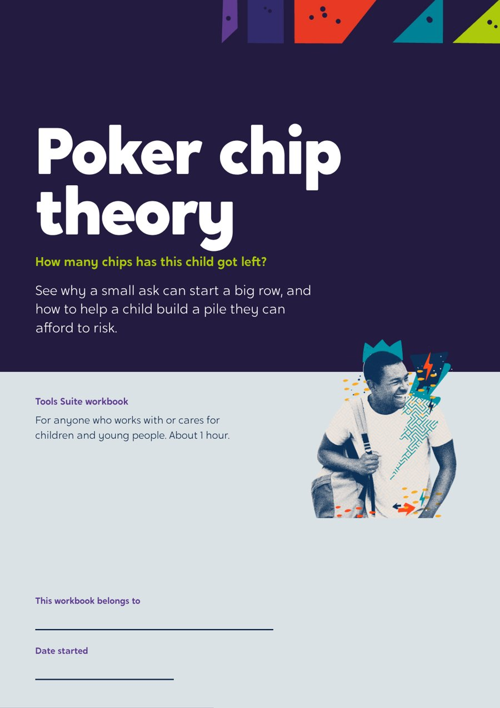
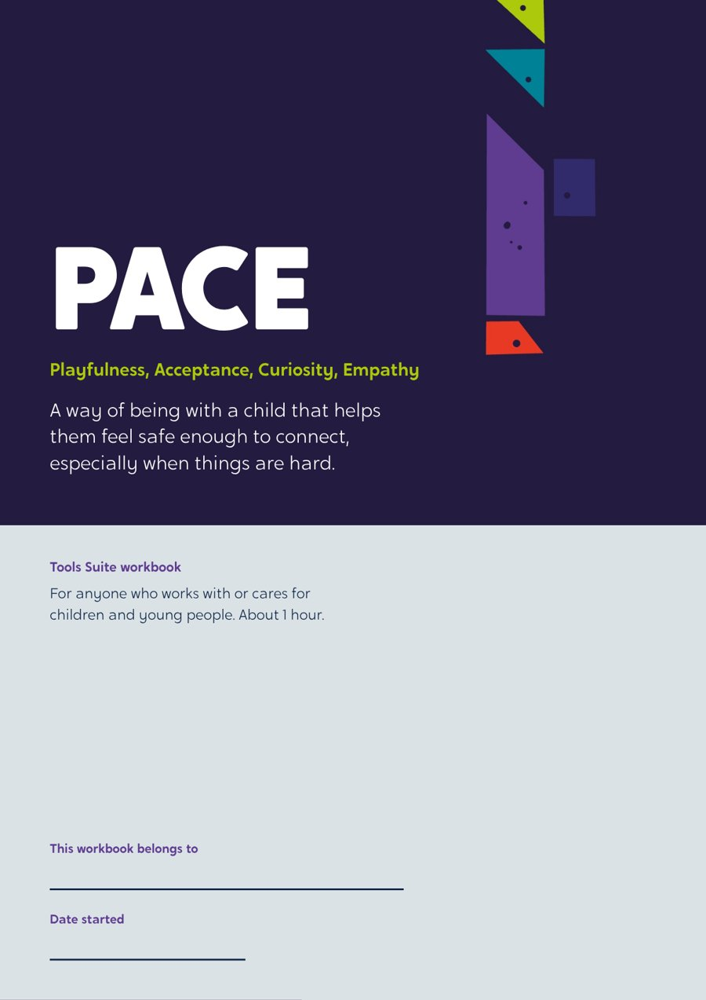
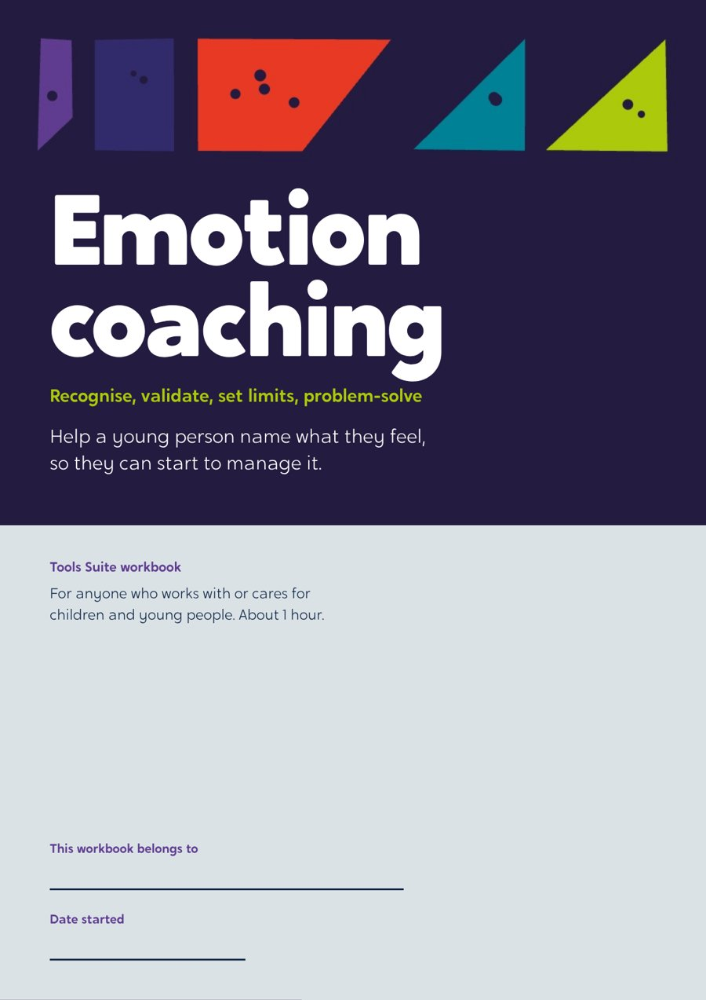

Designated Leaders Programme
A year-long leadership programme for designated teachers. Each teacher builds a picture of one child, learns practical tools that fit what their school needs, and leaves able to train their whole staff.

At a glance
One child. Every teacher. Whole school.
Online sessions open each term. Face-to-face days follow in the second half of term.
- 1Know the child
Online. Audit needs and behaviour in your school, and start an anonymised profile of one pupil.
Autumn - 2Three tools that work
Face to face. Learn three tools chosen from your cohort’s audit.
Autumn - 3What happened?
Online. Review how the tools worked in practice.
Spring - 4Build your training
Face to face. Build and rehearse training for your staff, with a short taster in school before summer.
Spring - 5How did it land?
Online. Review the taster and what staff took from it.
Summer - 6Lead the change
Face to face. Turn it into a full training day and a change plan for your September INSET.
Summer
Nine tools, chosen by your teachers
Tools on the menu include PACE, Poker Chip Theory, Emotion Coaching and Recognise, Reassure, Redirect.
- Three new tools each term, nine across the year
- The tools come from what your teachers’ audits show, so every cohort is different
- Every tool comes with a video, a slide deck and a workbook
- The programme and its materials are co-designed with you and yours to keep and reuse
Inside the workbooks



The work
Where the programme comes from.

Darlington Virtual School: Designated Leaders
The training designated teachers designed for themselves. 8 designated teachers co-designed a 10-month programme.
Read the case study
Virtual School Kent: A Tool for Change
One child’s story, three cohorts, a county’s schools. Around 490 staff trained, and 124 of 125 said the first session met its objectives.
Read the case study